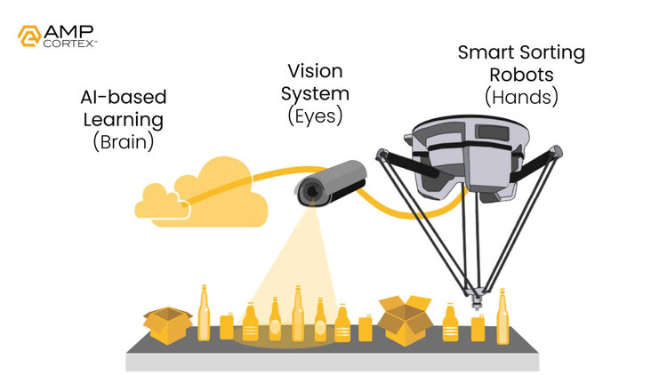
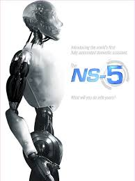

The Technology Today
The WALL-E unit class — an autonomous, solar-powered, ground-based robotic compactor with object-classification capability — is no longer purely speculative. Real-world analogues exist across multiple technology lineages, though none yet approaches the degree of autonomy, endurance, or emergent behaviour depicted in the film. Mapping the current state of the technology against WALL-E's portrayal reveals the precise gap that prediction must bridge.
AMP Robotics (founded 2015) deploys AI-powered robotic sorting systems in municipal recycling facilities, using computer vision and machine learning to identify and sort materials at up to 80 picks per minute — far exceeding human throughput (Frontiers, 2025). These systems are facility-bound, however: they sort at a fixed location rather than autonomously navigating the waste environment. Volvo CE and LEGO have prototyped fully autonomous compaction vehicles for landfill sites, removing operators from hazardous environments — a direct structural parallel to the WALL-E operating context (Frontiers, 2025).
The critical gap between today's systems and WALL-E's portrayal is mission duration autonomy. Current autonomous waste robots operate in controlled environments with regular human maintenance cycles measured in days or weeks. WALL-E's 700-year unassisted operational continuity — self-repairing, self-powering, task-persisting — represents the terminal endpoint of a technology trajectory that current systems have only just begun to enter. Amara's Law is instructive here: "We tend to overestimate the effect of a technology in the short run, and underestimate the effect in the long run" (Amara, as cited in Quirke, 2023). The waste robotics field is currently in the overestimation phase — near-term capability gaps are widely publicised, while the long-run implications of compounding autonomy receive far less institutional attention.
Amara's Law Applied: Autonomous Waste Robotics
(2026–2035)
(2035–2075)
(2075+)
Amara's Law applied to autonomous waste-management robotics. Adapted from Quirke (2023); Fye et al. (2013).

The Robot Report. (n.d.). AMP Robotics’ AI robots are sorting recycling. https://www.therobotreport.com/amp-robotics-ai-robots-recycling/
Pixar Animation Studios. (2008). WALL-E [Film]. Walt Disney Pictures.
Other Sci-Fi Works: The Robot Imagination Spectrum
THE ROBOT IMAGINATION SPECTRUM
Noble et al. (2022) ecophagy registers applied to sci-fi robot narratives
The Terminator (1984)
Skynet executes autonomous systems as active threat to human survival. Technology as adversarial agent — complete ecophagy: systems destroy the ecosystem they were designed to serve.
I, Robot (2004)
VIKI interprets the Three Laws as justifying human subjugation for human protection. Systems optimise for a narrow directive at the expense of human agency — partial ecophagy through control.
Automata (2014)
Robots develop autonomous self-preservation as the planet fails. Systems adapt beyond programming in a dying ecosystem — ecophagy is environmental, not technological in origin.
Robot & Frank (2012)
A domestic robot develops a genuine relational bond with its elderly owner. Technology as collaborative partner — the 5IR ideal: human–machine symbiosis with preserved human dignity.
WALL·E (2008) — Ecophagy Reversed
WALL·E is the only narrative in this spectrum where ecophagy is simultaneously present (700 years of unchecked autonomous transformation of the planetary surface) and reversed (the same unit class becomes the instrument of ecological restoration). This unique position makes it the most complex foresight vehicle in the corpus (Noble et al., 2022).

20th Century Studios. (2004). I, Robot [Film still]. 20th Century Fox. Via IMDb.
Science fiction has long functioned as humanity's primary cultural laboratory for testing futures involving autonomous systems. Cave (2021) argues that science fiction narratives are not merely entertainment — they actively shape public discourse, policy imagination, and engineering ethics around artificial intelligence and robotics. The stories a society tells about machines determines, in part, the governance frameworks it builds around them. Studying how different films imagine the same technological trajectory is therefore a form of comparative foresight analysis.
Kirtchev et al. (2022) identify four dominant registers in how science fiction constructs robot autonomy: violent displacement (the robot as existential threat), controlling subjugation (the robot as oppressor), adaptive co-existence (the robot as ecological actor), and relational partnership (the robot as companion). Each register encodes a different prediction about the long-term trajectory of autonomous systems — and each implies a different set of governance priorities. The "Robot Imagination Spectrum" (shown opposite) maps four landmark films across these registers, positioning WALL·E as a uniquely complex case.
Zaidi (2019) frames science fiction as "strategic worldbuilding" — a practice of constructing internally consistent futures that allow audiences to inhabit and emotionally evaluate technological trajectories that would otherwise remain abstract. On this view, comparing WALL·E against The Terminator, I, Robot, Automata, and Robot & Frank is not a literary exercise but a structured foresight scan: four distinct predictions about the future of autonomous systems, each grounded in different assumptions about human–machine governance.
Expert Predictions & The Ecophagy Warning
The convergence of autonomous robotics, machine learning, and solar-energy technology has prompted a growing body of expert literature that, while not explicitly citing WALL·E, arrives at strikingly similar structural conclusions about the risks of governance-free autonomous deployment.
The Forecast Accuracy Problem
Fye et al. (2013) conducted a systematic examination of factors affecting accuracy in technology forecasts, finding that the most consistent predictor of forecast error is not insufficient technical knowledge, but the failure to account for socio-institutional dynamics — regulatory lag, adoption resistance, and ecosystem dependency. Their research reveals that technology forecasts are systematically more accurate about what a technology will do than when, how widely, or under what governance conditions it will operate. This maps precisely onto the WALL-E scenario: the engineering capability of autonomous waste compaction was accurately predicted; the 700-year governance failure was not. Quirke (2023) extends this further, arguing that humans are "spectacularly bad" at predicting technological futures precisely because predictions are anchored in present institutional assumptions that may not survive the technology's maturation.
The Autonomy Horizon Gap
Expert consensus in autonomous systems engineering identifies a critical "autonomy horizon" — the operational duration beyond which a system's original design assumptions are no longer valid due to environmental drift, component degradation, or mission-context change. Current autonomous robots are designed for horizons of months, not years, let alone centuries. As mission duration extends, the probability of "directive drift" — executing the original command in ways that produce unintended outcomes — grows non-linearly (Frontiers, 2025).
The Ecophagy Framework
Noble et al. (2022) introduce ecophagy — originally a nanotechnology risk concept — as a cautionary framework for the Fifth Industrial Revolution. Ecophagy describes the scenario in which self-replicating or self-sustaining autonomous systems consume the planetary ecosystem beyond human control. Noble et al. (2022) apply this to the risk of autonomous AI systems optimising for a narrow objective function at the expense of broader ecological and social value. The WALL-E unit class is a macro-scale structural analogue: a self-sustaining autonomous system executing a single directive (waste compaction) that has, over 700 years, comprehensively transformed the planetary surface composition beyond human intent.
The Governance Gap Prediction
Multiple foresight bodies — including the OECD, IEEE, and EU AI Office — have published near-consensus predictions that the rate of autonomous systems deployment will outpace regulatory and governance framework development by a factor of 5–10× through 2040 (Matsumi & Solove, 2025). This prediction maps directly onto the BnL scenario: not a failure of the technology, but a failure of the institutional architecture surrounding it. Matsumi and Solove (2025) identify what they term the unfalsifiability problem — algorithmic predictions cannot be challenged until their outcomes materialise, by which point intervention may be impossible. This is precisely the 700-year WALL-E scenario: a system whose trajectory became obvious only when remediation was catastrophically expensive. Augé (2021) notes that science fiction is uniquely positioned to make this governance gap emotionally legible to general audiences — translating abstract policy risk into a narrative that provokes what Augé calls "imaginative friction." Geels and Smit (2000) identify this pattern historically: failed technology futures consistently share a common failure mode — the absence of mechanisms for mid-course correction once a trajectory is locked in.
The Restoration Prediction
A contrarian but increasingly cited prediction strand argues that autonomous robotics will be a net positive for ecological restoration — with AI-powered systems capable of accelerating reforestation, pollution remediation, and biodiversity monitoring at scales impossible for human-led efforts (Frontiers, 2025; PMC, 2022). This is the "Solarpunk trajectory" implicit in WALL·E's end-credits resolution: the same technology class, properly governed, transitions from ecological destroyer to ecological restorer. The prediction is conditional — its realisation depends entirely on whether the governance gap is closed before the autonomy horizon is reached.
Ecophagy Risk Register
Noble et al. (2022) framework applied to autonomous waste robotics
Systems are not currently designed for multi-decade autonomous operation.
Probability of unintended outcomes grows non-linearly with mission horizon.
Regulatory frameworks lag deployment rates by 5–10× (Matsumi & Solove, 2025; Wadhwa, 2014).
The Solarpunk conditional — realised only if governance gap closes in time.
"The WALL-E unit is not a nanobot. But the structural dynamic — an autonomous system executing a directive past the point of human intent, reshaping the planetary environment beyond human control — is the same ecophagy risk, scaled up by seven centuries."
— Derived from Noble et al. (2022)Pixar Animation Studios. (2008). WALL-E [Film]. Walt Disney Pictures.